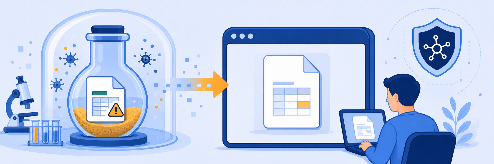
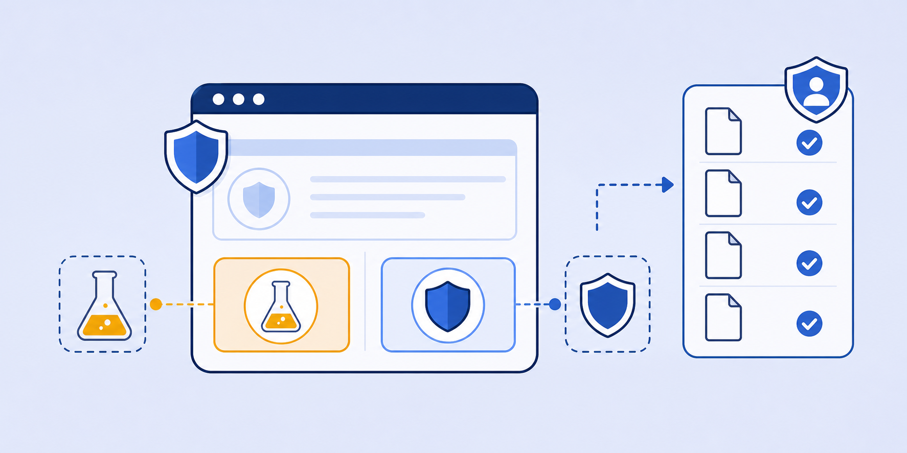

Lab 8: Protecting Against Zero Day Threats with Cloud Sandbox + Isolation
Scenario: Zscaler's Cloud Sandbox integrates with Browser Isolation via the "Quarantine and Isolate" action. When a user downloads a file that Sandbox has never seen before (first-time file), it is instantly rendered in an isolated container as a flattened PDF. The user can review the content immediately while Sandbox analyses the original file. If the verdict is benign, the original can be downloaded. If malicious, only the flattened PDF is available.

Sandbox + Isolation solves a classic security-vs-productivity tradeoff. Instead of "block and wait" (frustrating) or "allow and hope" (risky), users get immediate safe access to content while Sandbox analyses the original — parallel processing of safety and productivity.
- The Sandbox policy uses "Quarantine and Isolate" as the First-Time Action. What does "first-time" mean in this context, and why is this a practical approach rather than analysing every downloaded file?
- When a potentially malicious file is in Sandbox analysis, the user sees it in Protected Storage with a "semi-closed circle" status icon. What exactly is the user viewing at this point, and is it the original file?
- The Sandbox Detail Report shows a MITRE ATT&CK mapping. Why is this level of detail valuable to a security analyst rather than just a benign/malicious verdict?
Task 8.1: Review the Cloud Sandbox + Isolation Configuration
1 Verify the Sandbox-Enabled Isolation Profile
- In the ZIA Admin Portal, navigate to Administration › Browser Isolation.
- In the list, locate the TZTE Download and Copy profile.
- Confirm that File Transfer From: Isolation to local computer is set to Sandbox Scanned.
- This means files can only be downloaded from the isolation container to the local machine after Sandbox has cleared them.
Note: The "Sandbox Scanned" setting requires an Advanced Sandbox subscription. With a Read-Only Admin account you will see the profile but cannot edit it.
2 Review the Sandbox Isolation Policy
- Navigate to Policy › Sandbox.
- Click the eye icon next to the Sandbox Isolation policy.
- Review the File Types selected (Excel, PowerPoint, Word, PDF, RTF).
- Note the First-Time Action: Quarantine and Isolate and Isolation Profile: TZTE Download and Copy.
- Close the policy viewer.

Task 8.2: Test the Sandbox + Isolation Configuration
1 Trigger a Sandbox + Isolation Event
- On the Client PC VM, navigate to
https://securitytest.zsdemo.com/passwordless/browser-isolation.php. - The page opens in Browser Isolation with the banner: "Sandbox analysis is in progress."
- Note the file download appears in the browser with a "Sandbox Analysis in progress" (semi-closed circle) status icon.
- Click the Zscaler icon in the bottom-right corner to access the isolation menu, then click Show saved files.
- In Protected Storage, observe the file with the spinner icon indicating ongoing Sandbox analysis.
2 Review the Sandbox Verdict and Logs
- Wait for the banner: "Sandbox Analysis is completed and the file was found to be safe."
- Once verdicted safe, you can download the original file from Protected Storage.
- Navigate to Analytics › Web Insights › Logs.
- Add filters: User = your MKT username, URL Search (Host Contains) =
securitytest.zsdemo.com. - Click Apply Filters. In the column picker (3 dots), add the MD5 column.
- Click the MD5 hash link in the results to open the Sandbox Detail Report.
- Review the Classification, MITRE ATT&CK mapping, and Virus and Malware sections.